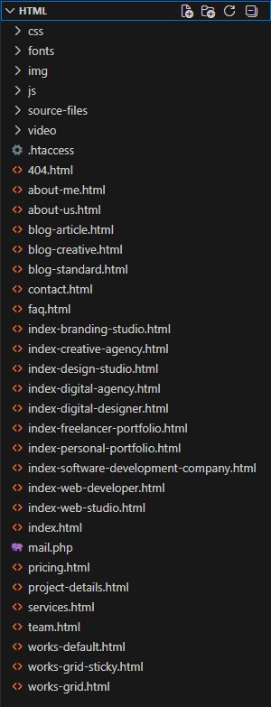
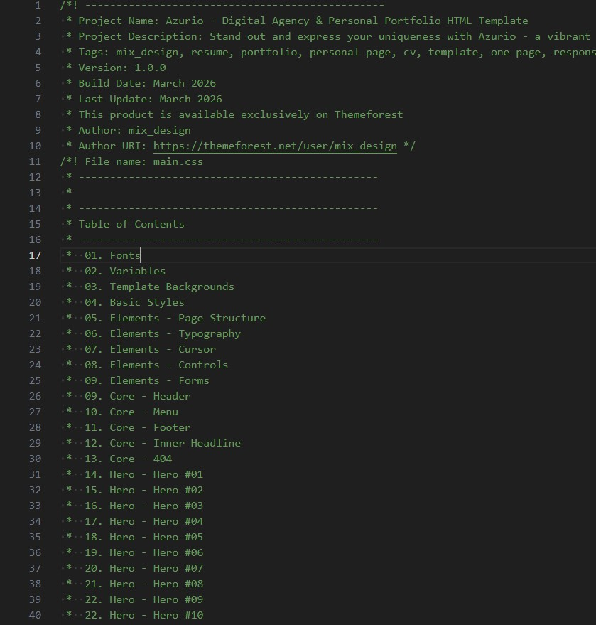
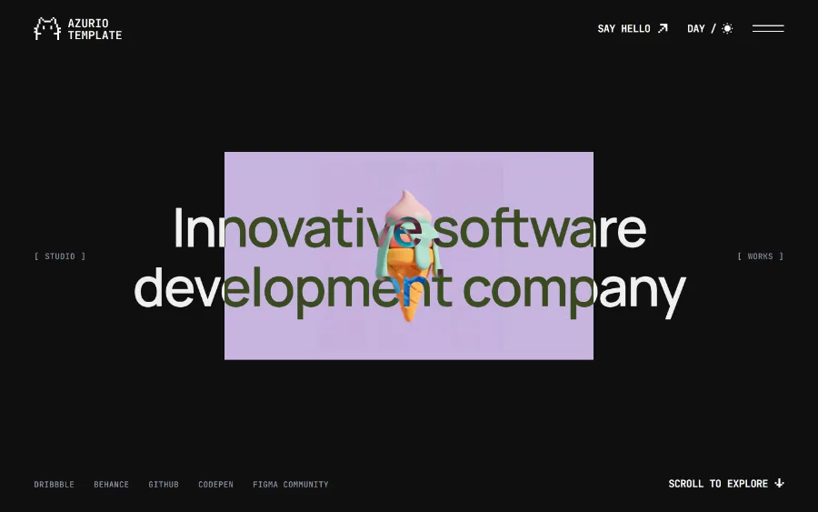
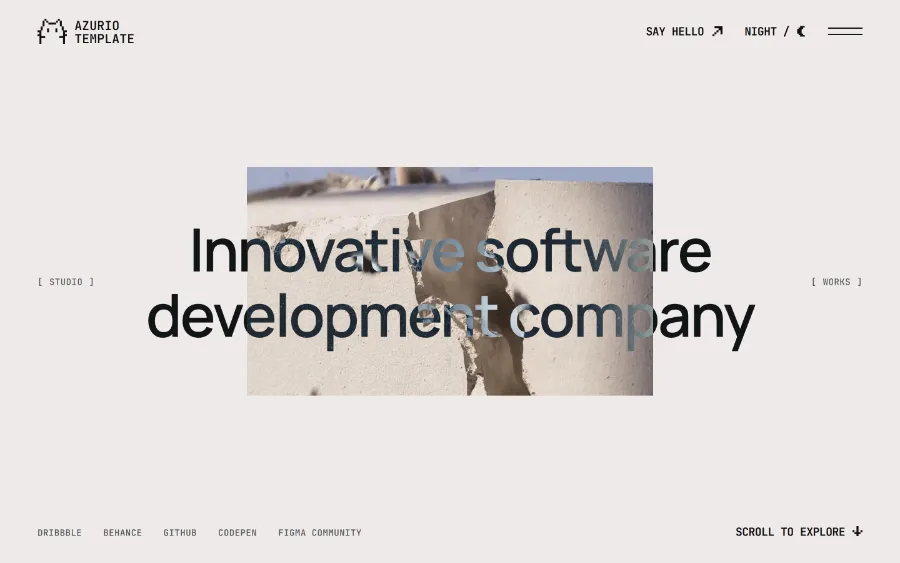
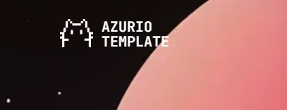
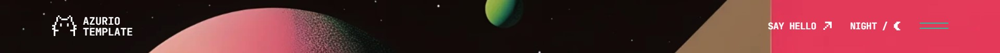
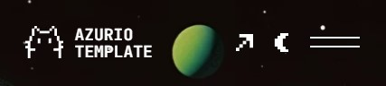
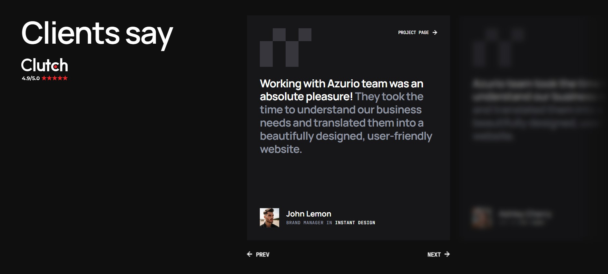
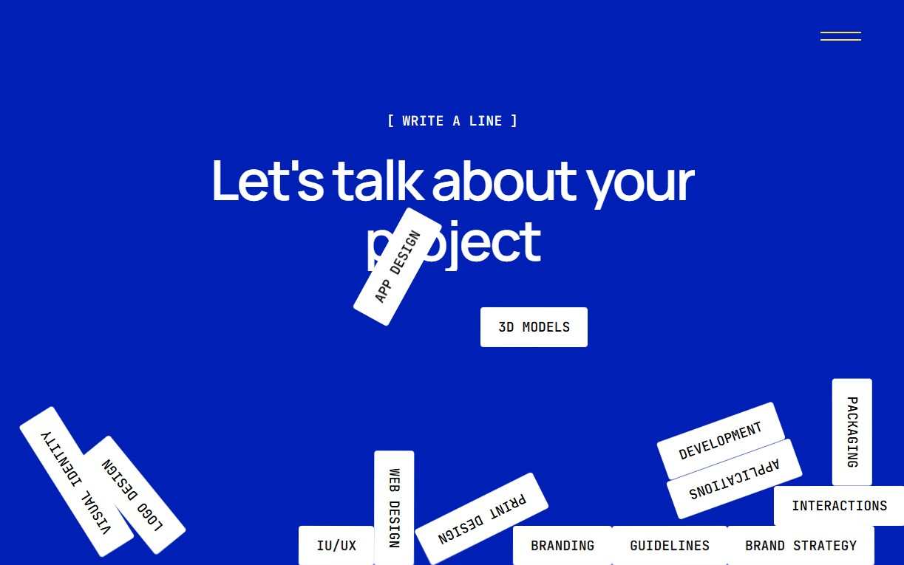
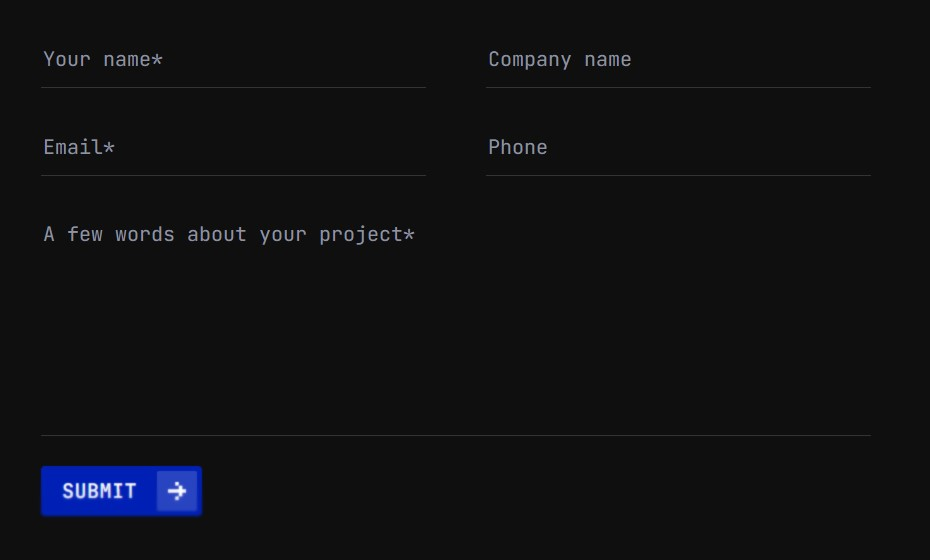

Azurio - Digital Agency & Personal Portfolio HTML Template
by:
mix_design
version: 1.0.0
created: 14 March 2026
last update: 14 March 2026
01
Introduction
Thank you for choosing Azurio - Digital Agency & Personal Portfolio HTML Template. We have prepared detailed documentation to make Azurio customization an easy task for you. If you have any questions that are beyond the scope of this help file, you can email us on support@mixdesign.dev.
We would be very happy if you could rate this item here with 5 stars. Your feedback is very important so write us a line 😀!
02
Installation
Follow the steps below to setup your site template:
-
In order to start working with Azurio unzip the downloaded package and open HTML folder to find all ready-to-use template files. Choose one of the demo index-*.html files (any ready-to-use demo you like) and rename it to index.html.
-
Next you'll need to prepare a project for customization. Below is a list of files and folders that are required in the root directory of your project:
index.html- your chosen *.html file (renamed already);cssfolder - stylesheet files;jsfolder - JavaScript files;fontsfolder - icon fonts files;imgfolder for project images and favicon;videofolder - project video files;mail.phpfile for sending e-mails;.htaccess- this file contain rules for files caching on web server;
-
The other files can be used according to your preferences.
-
Your project is ready to go! Now you can start adding your texts, images and video to your new awesome website.
-
After the customization is over, you'll need to upload the project files to your hosting web server using FTP client or cPanel interface in order to use it on your website.
03
Files Structure
After downloading and extracting template package you'll find 3 folders:
- HTML: ready to use HTML template;
- AzurioGULP: if you want to totally customize Azurio, you can use this template;
- Documentation: this help file.
This section describes
HTML
folder structure. More about
AzurioGULP
folder structure you can find out in
AzurioGULP
section.
Azurio is multi-page HTML template. So, mostly you will need one or more
*.html
file and supporting
*.css,
*.js,
*.php
files with some images. All the directories and files are well organized as it shown on the image bellow.

- all HTML files are located in the root directory;
- separate folders are created for CSS files, JavaScript files, fonts, images and video;
source-filesfolder contains all expanded CSS files, expanded JavaScript files, plugins and components files;mail.phpfile for sending e-mails is located in the root directory;.htaccessfile is located in the root directory. This file contain rules for files caching on the web server.
Demo Pages
Azurio is multi-page HTML template and comes with dark and light color themes, original set of inner pages and 10 ready home pages with various elements:


HTML structure
Each page of the Azurio template has a simple and easy to customize structure based on Bootstrap 5.3.8 Grid. Here is a sample page structure:
<!DOCTYPE html>
<html lang="en" dir="ltr">
<head>
...
</head>
<body>
<!-- Loader Start -->
<div class="mxd-page-transition"></div>
<div class="mxd-loader">
...
</div>
<!-- Loader End -->
<!-- Menu Hamburger Start -->
<div class="mxd-menu__contain">
...
</div>
<!-- Menu Hamburger End -->
<!-- Navigation Start -->
<nav class="mxd-menu">
...
</nav>
<!-- Navigation End -->
<!-- Header Start -->
<header id="header" class="mxd-header">
...
</header>
<!-- Header End -->
<!-- Page Content Start -->
<main id="mxd-page-content" class="mxd-page-content">
...
</main>
<!-- Page Content End -->
<!-- Footer Start -->
<footer id="mxd-footer" class="mxd-footer blur-section">
...
</footer>
<!-- Footer End -->
<!-- Global Cursor Start -->
<div id="mxd-cursor" class="mxd-cursor">
...
</div>
<!-- Global Cursor End -->
<!-- Load Scripts Start -->
<script src="js/libs.min.js"></script>
<script src="js/app.js"></script>
<!-- Load Scripts End -->
</body>
</html>
CSS Files
Azurio template CSS files have a well-organized structure and a table of contents, as you can see on image below:

All CSS files are placed in the
css
folder and should be included in the
<head>
tag.
Azurio uses uncompressed CSS files.
If you want to improve page speed performance, you can use minificated files from
source-files → azurio-css-min-files.
<!-- Template Styles Start-->
<link rel="stylesheet" type="text/css" href="css/loader.css">
<link rel="stylesheet" type="text/css" href="css/plugins.css">
<link rel="stylesheet" type="text/css" href="css/main.css">
<!-- Template Styles End-->
CSS files that should be included in chosen .html file:
-
loader.css -
plugins.css -
main.css
If you want to customize the CSS styles, we recommend creating your own
custom.css
file and including it in the
Template Styles
section of your
HTML
file. This solution will help you in future updates.
JavaScript Libraries
All JavaScript files are placed in
js
folder and should be included before the
</body>
tag.
libs.min.js- all JavaScript libraries that are necessary for Azurio proper work, are compiled in this file;app.js- includes other scripts calls and settings;
<!-- Load Scripts Start-->
<script src="js/libs.min.js"></script>
<script src="js/app.js"></script>
<!-- Load Scripts End-->
We used minificated
libs.min.js
file to add all necessary JavaScript libraries to this template. The file contains:
- jQuery
- Modernizr
- GSAP
- GSAP ScrollTrigger
- GSAP CustomEase
- GSAP ScrollTo
- GSAP Flip
- GSAP Inertia
- SplitType
- Lenis Smooth Scroll
- imagesLoaded
- Matter.js
- Typed.js
- Swiper Slider
- Ukiyo
All this uncompressed files you can find in the source-files folder.
04
Fonts
In the Azurio template we used Manrope Font, JetBrains Mono Font and Phosphor Iconic Font.
We also used custom pixel icons. These icons can be easily replaced with Phosphor icons.
Google Fonts
Azurio uses
- Manrope font for titles, basic text content and additional text.
- JetBrains Mono font for controls, accents and styled captions.
The font is embedded in the main.css file:
/* ------------------------------------------------*/
/* Fonts Start */
/* ------------------------------------------------*/
/* Manrope Font */
@import url("https://fonts.googleapis.com/css2?family=Manrope:wght@200..800&display=swap");
/* JetBrains Mono Font */
@import url("https://fonts.googleapis.com/css2?family=JetBrains+Mono:ital,wght@0,100..800;1,100..800&display=swap");
/* ------------------------------------------------*/
/* Fonts End */
/* ------------------------------------------------*/You can customize this font or embed another fonts for your project with Google Fonts. In this case, you'll also need to change the fonts in the css files per your fonts used.
Phosphor Icons
Azurio uses Phosphor iconic font. You can use phosphoricons.com page to easily find the icon you want to use. All icons are already compiled in the plugins.css file and ready for use.
To insert icon in your project, just choose Web tab and copy the code: <i class="ph ph-heart"></i>, <i class="ph ph-arrow-up"></i>, <i class="ph ph-instagram-logo"></i>.
<li>
<a href="https://www.instagram.com/" target="_blank">
<i class="ph ph-instagram-logo"></i>
</a>
</li>For more information about Phosphor icons, please visit the official documentation site - Phosphor Docs.
Custom Pixel Icons
Azurio uses custom pixel icons for controls. You can easily replace SVG pixel icons with Phosphor icons.
To to replace the SVG icon with Phosphor font icon, uncomment the Phosphor icon and remove the SVG one:
<a class="btn mxd-header__link slide-right-up" href="contact.html" aria-label="Say Hello">
<span class="btn-caption mxd-scramble">Say Hello</span>
<i>
<svg xmlns="http://www.w3.org/2000/svg" version="1.1" viewBox="0 0 18 18">
<path d="M18,0v14.4h-3.6v-7.2h-3.6v-3.6H3.6V0h14.4ZM7.2,10.8h3.6v-3.6h-3.6s0,3.6,0,3.6ZM3.6,14.4h3.6v-3.6h-3.6v3.6ZM0,18h3.6v-3.6H0v3.6Z"/>
</svg>
</i>
<!-- Phosphor icon -->
<!-- <i class="ph-bold ph-arrow-up-right"></i> -->
</a>Here is what you should get:
<a class="btn mxd-header__link slide-right-up" href="contact.html" aria-label="Say Hello">
<span class="btn-caption mxd-scramble">Say Hello</span>
<!-- Phosphor icon -->
<i class="ph-bold ph-arrow-up-right"></i>
</a>05
Favicon and Apple touch icons
Azurio covers all modern design requirements for favicons and icons across platforms:
Classic favicon:
<link rel="icon" href="img/favicon/favicon.ico" sizes="any">
Android Web App Manifest & Apple Touch Icon:
<link rel="apple-touch-icon" href="img/favicon/apple-touch-icon.png">
<link rel="manifest" href="img/favicon/manifest.webmanifest">
Universal SVG Icon for All Sizes and Dark & Light Browser Color Themes:
<link rel="icon" href="img/favicon/icon.svg" type="image/svg+xml">
Facebook Metadata:
<!-- Facebook Metadata Start -->
<meta property="og:image:height" content="1200">
<meta property="og:image:width" content="1200">
<meta property="og:title" content="Azurio - Digital Agency & Personal Portfolio HTML Template">
<meta property="og:description" content="Stand out and express your uniqueness with Azurio - a vibrant and minimal HTML template for creatives, studios and freelancers. Impress your website visitors with a clean, stylish layout and stunning visuals.">
<meta property="og:url" content="https://mixdesign.club/themeforest/azurio">
<meta property="og:image" content="https://mixdesign.club/themeforest/azurio/img/og-image.jpg">
<!-- Facebook Metadata End -->
You can use Azurio favicon as an example or generate a new one with RealFaviconGenerator or any other favicon generator according to your needs.
06
Customization
Azurio template comes with easily customizable page elements. You can choose from 10 ready-to-use demo files, 2 color themes, various page elements and blocks and much more.
Preloader
Loader will hide contents of your site until it's fully loaded. Azurio template is provided with a loading system - if the page is opened for the first time or in new window, the loader plays images flicker scene. While navigating between pages just simple transition will be played.
If you want to customize the loader find this code in *.html file:
<!-- Loader Start -->
<div class="mxd-page-transition"></div>
<div class="mxd-loader">
<div class="mxd-loader__top">
<span>Azurio Agency</span>
</div>
<div class="mxd-loader__images">
<img src="img/loa_01.webp" alt="Azurio Template Loader Image">
<img src="img/loa_02.webp" alt="Azurio Template Loader Image">
<img src="img/loa_03.webp" alt="Azurio Template Loader Image">
<img src="img/loa_04.webp" alt="Azurio Template Loader Image">
<img src="img/loa_05.webp" alt="Azurio Template Loader Image">
<img src="img/loa_06.webp" alt="Azurio Template Loader Image">
<img src="img/loa_07.webp" alt="Azurio Template Loader Image">
</div>
<div class="mxd-loader__bottom">
<div class="mxd-loader__count">
<span class="count__text">0</span>
<span class="count__percent">%</span>
</div>
<span class="mxd-loader__caption">Loading</span>
</div>
</div>
<!-- Loader End -->Loader styles are included in the <head> tag:
<!-- Template Styles Start-->
<link rel="stylesheet" type="text/css" href="css/loaders/loader.css">
...
<!-- Template Styles End-->If you want to remove the loader you need to delete the loader and the page transition object from the *.html file:
<!-- Loader Start -->
<div class="mxd-page-transition"></div>
<div class="mxd-loader">
<div class="mxd-loader__top">
<span>Azurio Agency</span>
</div>
<div class="mxd-loader__images">
<img src="img/loa_01.webp" alt="Azurio Template Loader Image">
<img src="img/loa_02.webp" alt="Azurio Template Loader Image">
<img src="img/loa_03.webp" alt="Azurio Template Loader Image">
<img src="img/loa_04.webp" alt="Azurio Template Loader Image">
<img src="img/loa_05.webp" alt="Azurio Template Loader Image">
<img src="img/loa_06.webp" alt="Azurio Template Loader Image">
<img src="img/loa_07.webp" alt="Azurio Template Loader Image">
</div>
<div class="mxd-loader__bottom">
<div class="mxd-loader__count">
<span class="count__text">0</span>
<span class="count__percent">%</span>
</div>
<span class="mxd-loader__caption">Loading</span>
</div>
</div>
<!-- Loader End -->This is enough for the loader to stop playing and won't affect other functions. But if you want to remove the loader entirely,
so the JavaScript file become smaller, you'll need to remove all loader scene
from the app.js including these functions:
mxdLoader();
mxdPageTransition();
startLoader();
hideLoader();
pageAppearance();Done! Now the loader is removed and the page works as it should.
Color themes
Azurio template provides 2 color themes and 10 ready-to-use demo pages. The template automatically detects the color theme of the device and applies the same - dark or light. You can change the color theme by clicking the color theme switcher.
It's easy to change the dark and light color themes by changing the default variables in the main.css file:
:root {
...
/* light color scheme */
--base--light: #EEEAE8;
...
/* dark color scheme */
--base--dark: #0f0f0f;
...
/* permanent colors */
--pt-base: #FFFFFF;
...
}- Dark Color Skin

- Light Color Skin

Feel free to experiment!
Logo
The logo container is located in the header and contains the SVG image and the text part:
<!-- Header Start -->
<header id="header" class="mxd-header mxd-header-permanent">
<!-- header logo -->
<div class="mxd-header__logo loading-fade">
<a class="mxd-logo" href="index-branding-studio.html">
<!-- logo icon -->
<svg class="mxd-logo__image" xmlns="http://www.w3.org/2000/svg" version="1.1" viewBox="0 0 42.4 36">
...
</svg>
<!-- logo text -->
<div class="mxd-logo__text">
<span class="mxd-scramble">Azurio</span>
<span class="mxd-scramble">Template</span>
</div>
</a>
</div>
...
</header>
<!-- Header End -->
Please note! If you want to change the logo color with the color theme switch button,
you need to use the inline SVG image code with the fill="currentColor" property or use CSS variables in the CSS part of the inline SVG image:
<svg xmlns="http://www.w3.org/2000/svg" width="50px" height="50px" viewBox="0 0 50 50" fill="currentColor">
<path id="caption" fill="currentColor" d="..."/>
<path id="logo" fill="currentColor" d="..."/>
</svg><!-- logo icon -->
<svg class="mxd-logo__image" version="1.1" xmlns="http://www.w3.org/2000/svg" x="0px" y="0px" viewBox="0 0 56 56" style="enable-background:new 0 0 56 56;" xml:space="preserve">
<style type="text/css">
.mxd-logo__bg{fill:var(--base-opp);}
.mxd-logo__cat{clip-path:url(#mxd-logo__id);fill:var(--base);}
</style>
<path class="mxd-logo__bg" d="..."/>
<g>
<defs>
<path id="mxd-logo__clippath" d="..."/>
</defs>
<clipPath id="mxd-logo__id">
<use xlink:href="#mxd-logo__clippath" style="overflow:visible;"/>
</clipPath>
<path class="mxd-logo__cat" d="..."/>
</g>
</svg>Of course, you can use an ordinary <img> tag, but in this case the logo won't change it's color with the theme.
Images
All images used in the Azurio template live demo are just for preview purposes only and they are not included in the main download files. You can easily find all images on freepik.com or pexels.com. We use placeholders from dummyimage.com instead of real images. You can easily replace placeholder URL with a path to your image like img/yourimage.jpg.
All template background images you can replace in the main.css file:
/* ------------------------------------------------*/
/* Template Backgrounds Start */
/* ------------------------------------------------*/
.mxd-hero-01 {
background-image: url(../img/hero/1920x1200_h01.webp);
}
...
/* ------------------------------------------------*/
/* Template Backgrounds End */
/* ------------------------------------------------*/Header
Azurio template comes with 1 header type with left aligned logo and right aligned menu trigger.
Desktop view:

Mobile view:

The header contains the logo and the controls container. You can find the header in the beginning of the *.html file:
<!-- Header Start -->
<header id="header" class="mxd-header mxd-header-permanent">
<!-- header logo -->
<div class="mxd-header__logo loading-fade">
...
</div>
<!-- header controls -->
<div class="mxd-header__controls loading-fade">
...
</div>
</header>
<!-- Header End -->07
Plugins
Animated Headline
We used Typed.js plugin for an animated headline feature. To customize an animated headline,
you need to find the following markup in the main section of the *.html file and change the content of <b> tags:
<h1 class="large animated-type">
<span id="typed-strings" class="typed-strings">
<b>UI designer</b>
<b>3D Artist</b>
<b>Illustrator</b>
</span>
<span id="typed"></span>
</h1>You can find the headline settings (such as typing speed) in the app.js file:
// --------------------------------------------- //
// Hero Typed.js Plugin Settings - About Me Page Start
// --------------------------------------------- //
function mxdHeroTyped() {
var animatedHeadline = $(".animated-type");
if (!animatedHeadline) return;
if(animatedHeadline.length){
var typed = new Typed('#typed', {
stringsElement: '#typed-strings',
showCursor: true,
cursorChar: '_',
loop: true,
typeSpeed: 70,
backSpeed: 30,
backDelay: 2500
});
}
}
// --------------------------------------------- //
// Hero Typed.js Plugin Settings - About Me Page End
// --------------------------------------------- //Visit Typed.js plugin website for more details and settings - mattboldt.com/demos/typed-js
Swiper Slider
Azurio uses Swiper Plugin for the testimonials slider. It's a simple slider with navigation buttons, illustrations and slide effects:

You can add or remove slides in the team.htmlfile:
<!-- Testimonials Slider Start -->
<div class="testimonials-slider overflow-hidden anim-uni-in-up">
<!-- slider main container -->
<div class="swiper-testimonials">
<!-- additional required wrapper -->
<div class="swiper-wrapper">
<!-- single slide -->
<div class="swiper-slide">
...
</div>
...
</div>
<!-- navigation buttons -->
<div class="swiper-button-prev mxd-slider-btn mxd-slider-btn-prev animate-card-2">
<a class="btn btn-line-icon btn-line-default slide-left" href="#0">
<!-- <i class="ph ph-arrow-left"></i> -->
<i>
<svg xmlns="http://www.w3.org/2000/svg" version="1.1" viewBox="0 0 18 18">
<path d="M7.2,18v-3.6h3.6v3.6h-3.6ZM3.6,7.2H0v3.6h3.6v3.6h3.6v-3.6h10.8v-3.6H7.2v-3.6h-3.6s0,3.6,0,3.6ZM7.2,3.6h3.6V0h-3.6v3.6Z"/>
</svg>
</i>
<span class="btn-caption mxd-scramble">Prev</span>
</a>
</div>
<div class="swiper-button-next mxd-slider-btn mxd-slider-btn-next animate-card-2">
<a class="btn btn-line-icon btn-line-default slide-right" href="#0">
<span class="btn-caption mxd-scramble">Next</span>
<!-- <i class="ph ph-arrow-right"></i> -->
<i>
<svg xmlns="http://www.w3.org/2000/svg" version="1.1" viewBox="0 0 18 18">
<path d="M10.8,0v3.6h-3.6V0h3.6ZM14.4,10.8h3.6v-3.6h-3.6v-3.6h-3.6v3.6H0v3.6h10.8v3.6h3.6v-3.6ZM10.8,14.4h-3.6v3.6h3.6v-3.6Z"/>
</svg>
</i>
</a>
</div>
</div>
<div class="testimonials-slider__shadow"></div>
</div>
<!-- Testimonials Slider End -->
Find the Load Scripts section at the end of the <body> tag and make sure that all the necessary js files are added in the following order:
- libs.min.js
- app.js
<!-- Load Scripts Start -->
<script src="js/libs.min.js"></script>
<script src="js/app.js"></script>
<!-- Load Scripts End -->
If you want to change the settings of the slider, find the
app.js
file in the
js
folder and make the necessary changes here:
| // --------------------------------------------- //
| // Swiper Slider - Testimonials Start
| // --------------------------------------------- //
| const testimonialsSlider = document.querySelector("testimonials-slider");
| if (!testimonialsSlider) {
| const swiper = new Swiper('.swiper-testimonials', {
| slidesPerView: 'auto',
| grabCursor: true,
| spaceBetween: 30,
| autoplay: true,
| delay: 3000,
| speed: 1000,
| loop: true,
| parallax: true,
| loopFillGroupWithBlank: true,
| pagination: {
| el: ".swiper-pagination",
| type: "fraction",
| },
| navigation: {
| nextEl: '.swiper-button-next',
| prevEl: '.swiper-button-prev',
| },
| });
| };
| // --------------------------------------------- //
| // Swiper Slider - Testimonials End
| // --------------------------------------------- //
More information about the Swiper settings you can find in the official documentation - swiperjs.com/get-started
Ukiyo
Azurio uses the Ukiyo Plugin to create modern parallax images and videos.
You can use it for img, picture, video and background-image elements.
We have 3 predefined classes:
.parallax-img.parallax-img-small.parallax-video
Here we use Ukiyo for the background-image element:
<div class="mxd-divider__image divider-image-1 parallax-img"></div>
Also you can use the class for the img tag the same way:
<div class="mxd-divider__image parallax-img">
<img class="parallax-img" src="img/YOUR-IMAGE.webp" alt="Image">
</div>
Find the Load Scripts section at the end of <body> and make sure that all the necessary js files are added in the following order:
- libs.min.js
- app.js
<!-- Load Scripts Start -->
<script src="js/libs.min.js"></script>
<script src="js/app.js"></script>
<!-- Load Scripts End -->
If you want to change the settings of this plugin, find the
app.js
file in
js
folder and make the necessary changes to the Ukiyo lines:
// --------------------------------------------- //
// Parallax - Ukiyo Images & Video Start
// --------------------------------------------- //
const images = document.querySelectorAll(".parallax-img");
const imagesSmall = document.querySelectorAll(".parallax-img-small");
const video = document.querySelectorAll(".parallax-video");
new Ukiyo(images,{
scale: 1.4,
speed: 1.5,
externalRAF: false,
});
new Ukiyo(imagesSmall,{
scale: 1.2,
speed: 1.5,
externalRAF: false
});
new Ukiyo(video,{
scale: 1.5,
speed: 1.5,
externalRAF: false
});
// --------------------------------------------- //
// Parallax - Ukiyo Images & Video End
// --------------------------------------------- //
More information about Uliyo settings you can find on the official page - ukiyo-js.dev
Matter.js
Azurio uses the Matter.js to create an interactive footer animation.

You can modify the animation and interaction using config parameters in
the app.js file:
// --------------------------------------------- //
// Animation - Gravity (Matter.js) Start
// --------------------------------------------- //
function mxdGravity() {
...
const config = {
gravity: { x: 0, y: 1 },
restitution: 0.5,
friction: 0.15,
frictionAir: 0.02,
density: 0.002,
wallThickness: 200,
mouseStiffness: 0.6,
};
...
}
// --------------------------------------------- //
// Animation - Gravity (Matter.js) End
// --------------------------------------------- //
To make sure you have everything for the plugin proper work, find the Load Scripts section at the end of <body> and make sure that all the necessary js files are added in the following order:
- libs.min.js
- app.js
<!-- Load Scripts Start -->
<script src="js/libs.min.js"></script>
<script src="js/app.js"></script>
<!-- Load Scripts End -->
More information about Matter.js settings you can find on the official documentation page - brm.io/matter-js/docs
08
Animated Backgrounds
All backgrounds CSS styles are compiled in the plugins.css file so you don't need to add any CSS files.
HTML5 Video
To provide self-hosted (local) video background feature we use HTML5 <video> tag. Also we used <source> property with 2 video formats to maximize browser support:
<div class="mxd-hero-09__background">
<video class="mxd-hero-09__video"
autoplay
muted
loop
playsinline
preload="auto"
poster="video/1280x720_hero-09.webp">
<source type="video/mp4" src="video/1280x720_hero-09.mp4">
<source type="video/webm" src="video/1280x720_hero-09.webm">
</video>
</div>You can use online service to convert your video: Online Uniconverter or any other similar applicaton.
Please note, if you'll not use muted property of the <video> tag, your video will not start automatically in some browsers.
Please note, if you'll not use playsinline property of the <video> tag, your video may open in the popup on Apple devices.
09
Forms
Azurio template is provided with 1 working form types:
Contact Form
Azurio template has integrated ajax contact form.

It's very easy to set up this forms to receive feedback on your e-mail:
- First of all you need to make sure that
mail.phpfile is added to the root directory of your project. - Then find the
<form>tag withid="contact-form"in the*.htmlfile. - This form contains 3 hidden required inputs. Replace data in the value parameter of these hidden fields:
<!-- Contact Form Start --> <form class="form contact-form" id="contact-form"> <!-- Hidden Required Fields --> <input type="hidden" name="project_name" value="Azurio Template"> <input type="hidden" name="admin_email" value="support@mixdesign.dev"> <input type="hidden" name="form_subject" value="Contact Form Message"> <!-- END Hidden Required Fields--> ... </form> <!-- Contact Form End --> - Check the connection of JavaScript files.
JavaScript files that need to be included:
- libs.min.js
- app.js
<!-- Load Scripts Start-->
<script src="js/libs.min.js"></script>
<script src="js/app.js"></script>
<!-- Load Scripts End-->Done! Now you can receive messages on your e-mail.
10
AzurioGULP
If you want to totally customize Azurio, you can use our all-inclusive AzurioGULP template. AzurioGULP includes Bootstrap 5 Grid, Gulp, Sass, Bourbon, Autoprefixer, Browsersync, Clean-CSS, CSS Beautify, Uglify, and other packages for efficient and comfortable work.
AzurioGULP requires node, npm and git.
Getting started
Install Node Modules: npm i
Run AzurioGULP: gulp
Project structure
- The source code is located in the
appdirectory; - SASS files are located in the
sassdirectory; - The
distfolder is a production folder. It contains ready project with optimized HTML, CSS, JS and images.
Gulp tasks
gulp: run default gulp task for web development;
build: build project to dist folder;
clearcache: clear all gulp cache.
If you have any questions about AzurioGULP, you can email us on support@mixdesign.dev.
11
Changelog
Version 1.0.0 14 March 2026
- Initial release
12
Credits
CSS and JavaScript files
- jQuery - jquery.com
- Modernizr - modernizr.com
- GSAP - gsap.com
- GSAP ScrollTrigger - gsap.com/docs/v3/Plugins/ScrollTrigger
- GSAP ScrollTo - gsap.com/docs/v3/Plugins/ScrollToPlugin
- GSAP Flip - gsap.com/docs/v3/Plugins/Flip
- GSAP CustomEase - gsap.com/docs/v3/Eases/CustomEase
- GSAP Inertia - gsap.com/docs/v3/Plugins/InertiaPlugin
- Lenis Smooth Scroll - lenis.studiofreight.com
- Bootstrap 5 grid - getbootstrap.com
- imagesLoaded - github.com/desandro/imagesloaded
- SplitType - github.com/lukePeavey/SplitType
- Typed.js - mattboldt.com/demos/typed-js
- Swiper Slider - swiperjs.com
- Ukiyo - ukiyo-js.dev
- UniMail - github.com/agragregra/uniMail
Icons and images
- Icons - Phosphoricons.com
- Images - Freepik.com and Pexels.com
- Mockups - Designdeck.io, Unblast.com and Minimalmockups.com